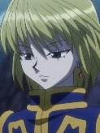

Selecione um personagem
-

- 
Gon
Gon é um um garoto simples e amigável que está em busca de uma aventura. Ele não é bom em matemática. Gon, por ter passado muito tempo em locais selvagens na infância, é capaz de lidar bem com animais.